Many people tend to make fun of the idea that the prophet went from the mosque in mecca to Jerusalem at night
Although this is a miracle that means it shouldn’t be explained by scientifical laws for atheists reading this
to break the laws is impossible to you but if God exists which he does he can let it happen that is the theist
view you can’t disprove the miracle.
But what kind of proof did prophet muhammed bring back to his people to believe him
Translation: “Abu bakr said I testify that you are Gods messenger the pagans then made fun of them the prophet
then gave them detail about the caravan that would be coming in a few days after a few days the tribe with exact
detail has shown up”.
-Source: Syar a’alam al-nubala’ al-sirah al-nabawiyah volume 1 page number 198
Grade: Sahih (authentic) isnad (chain of transmission) according to al-bayhaqui
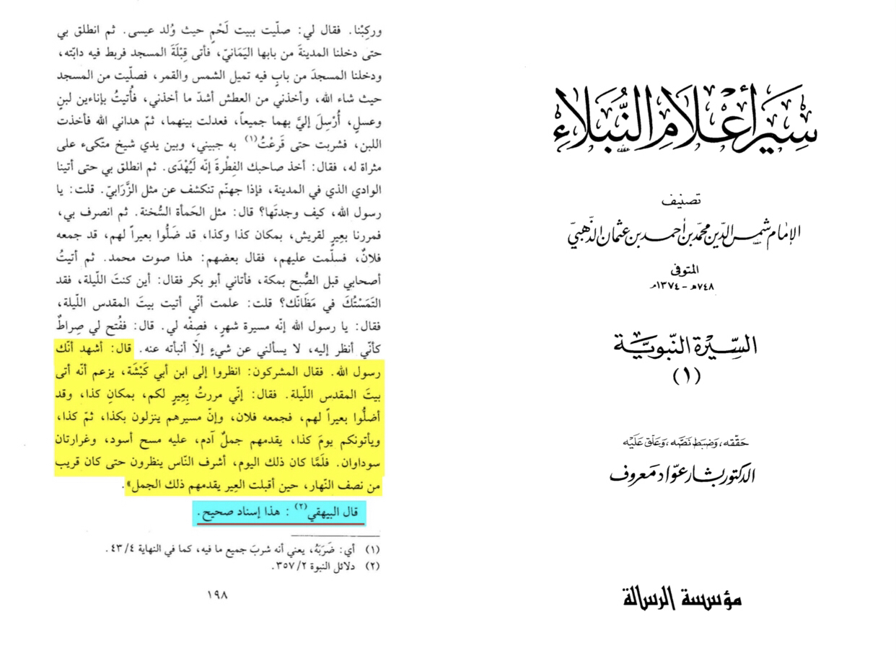
translation: “It is narrated on the authority of Abu Huraira that theMessenger of Allah (ﷺ) said:I found myself in
Hijr and the Quraish were asking me about my might journey. I was asked about things pertaining to Bait-ul-Maqdis
which I could not preserve (in my mind). I was very much vexed, so vexed as I had never been before.
Then Allah raised it (Bait-ul-Maqdis) before my eyes. I looked towards it, and I gave them the information about
whatever they questioned me I also saw myself among the group of apostles.”
-Source: Sahih muslim 172
Grade: Sahih (authentic) according to the conditions of Bukhari and Muslim
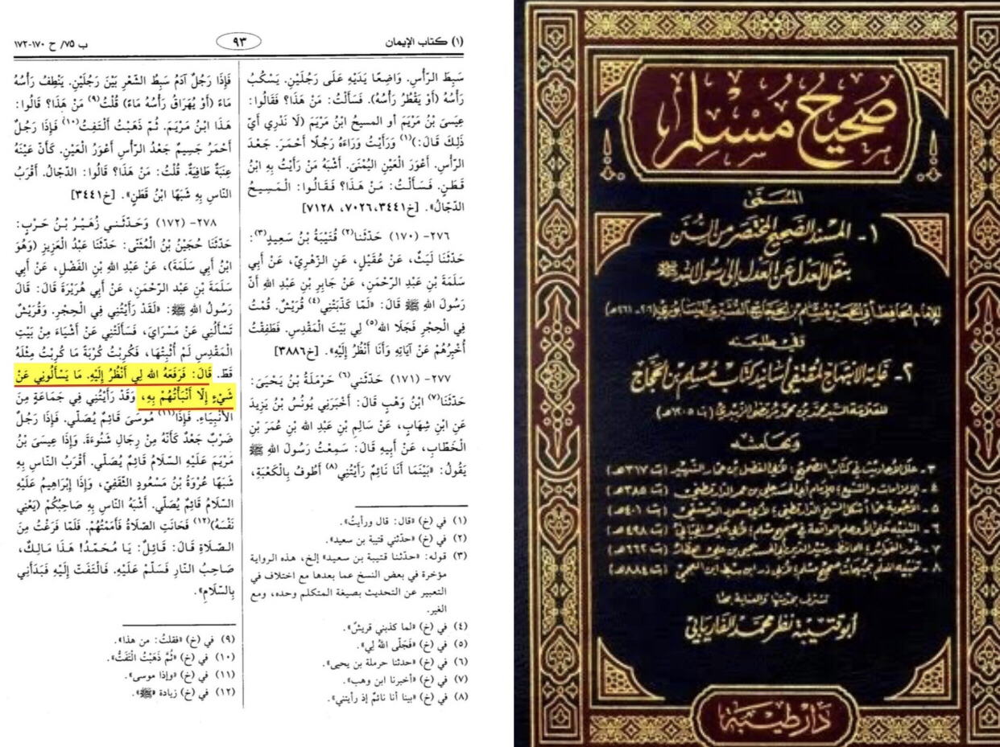
Anyone who didn’t go there couldn’t get this information
Now some people claim it was in the dream however if that was the case God wouldn’t call it one of his greatest
miracles/signs since I can do same in a dream
Surah An-Najm (The Star)
53:18
He certainly saw some of his Lord’s greatest signs.
Translation: Dr. Mustafa Khattab, the Clear Quran | Meccan
Another claim is it having wings however this isn’t the case since once in a narration Aisha told the prophet
that the horses of Solomon had wings and he laughed meaning he knew it doesn’t make sense ,
there is no evidence it had wings
Now a last claim is that it was copied from the Zoroastrians however this isn’t plausible since the iranian
encyclopedia says they copied it from Islamic literature
http://www.iranicaonline.org/articles
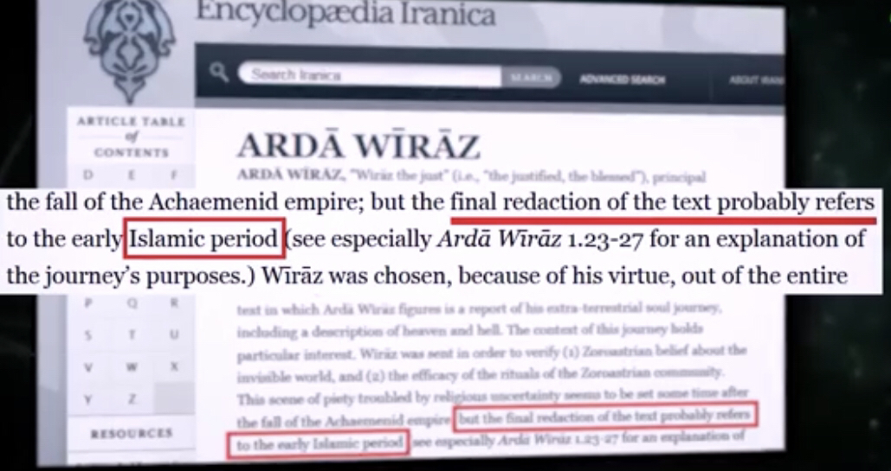
A response to refute all of this is what Abu bakr said when the pagans were making fun of the prophet, he said
“I believe he was sent by the lord above the 7 earthes that he gets information from there so I won’t believe that?”
Incase a Christian makes that claim… 👇
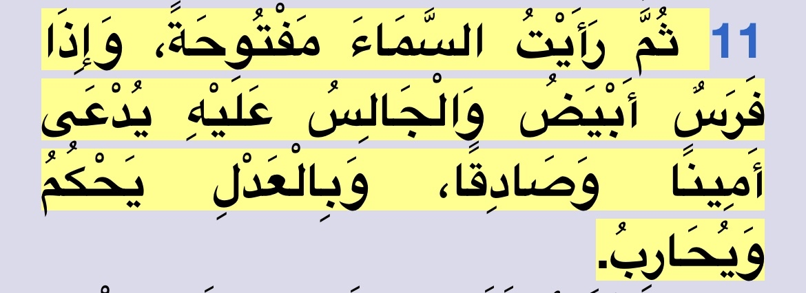
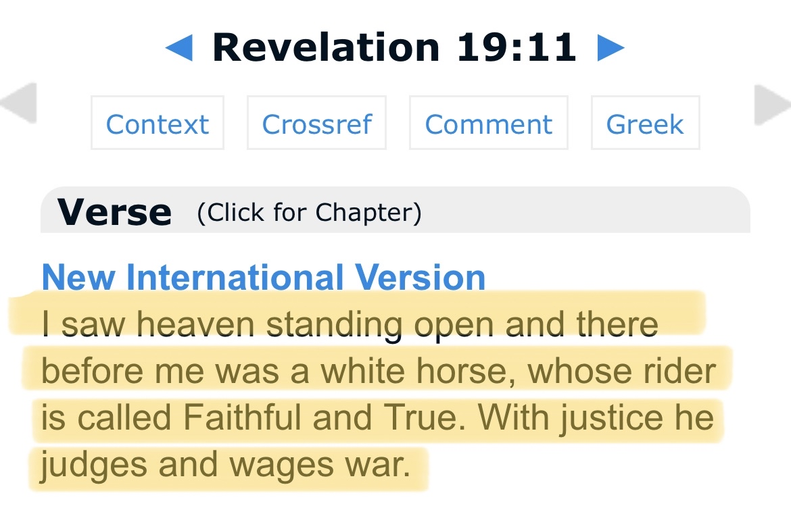
And to prove the description is talking about prophet Muhammed pbuh: -
- white horse
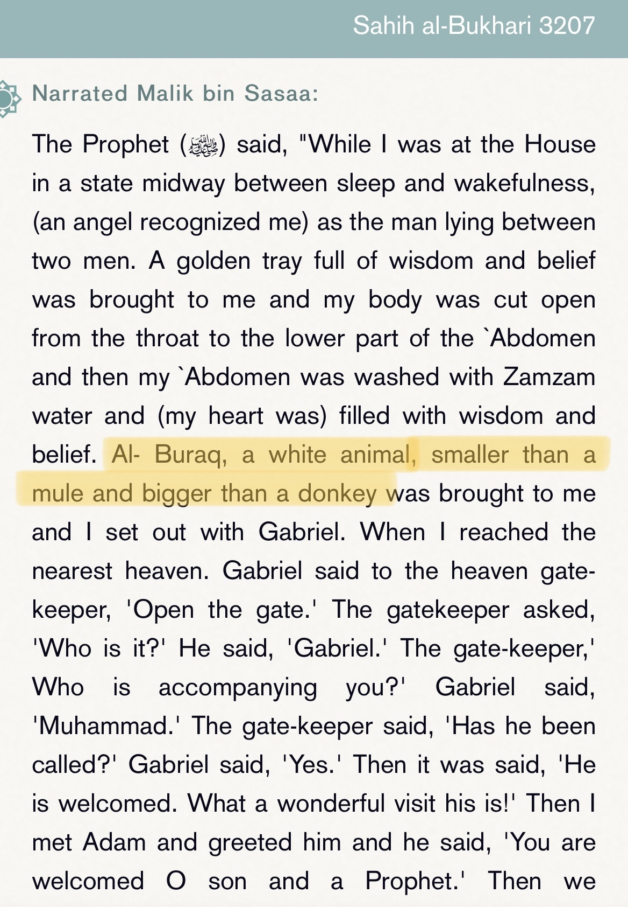
- Prophet Muhammad Pbuh truthfulnesses and trustworthiness
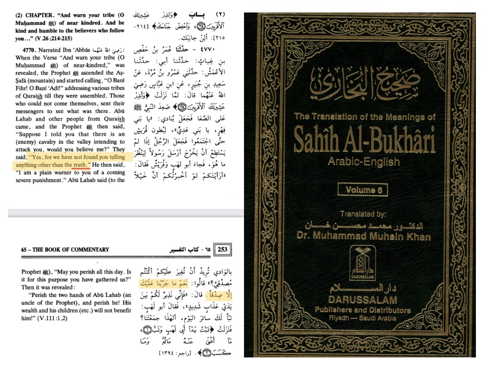
“They said, "Put among you a judge." They said, "The first man to come out of the crude, and the Prophet
(may Allah's peace and blessings be upon him) came and they said, "The honest came to you."
Source: Musnad Ahmed ibn hanbal (book 24/ pg: 262)
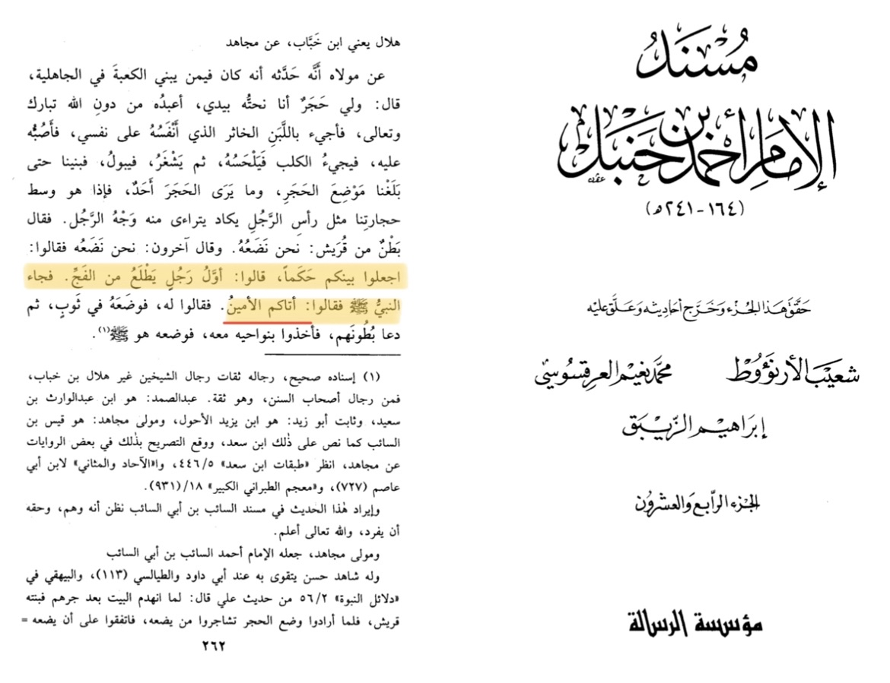
“Untill Allah (SWT) sent to us a Messenger from us, we know his lineage, and truthfulnesses”
Source: Musnad Ahmed ibn hanbal (book 3/ pg: 266)
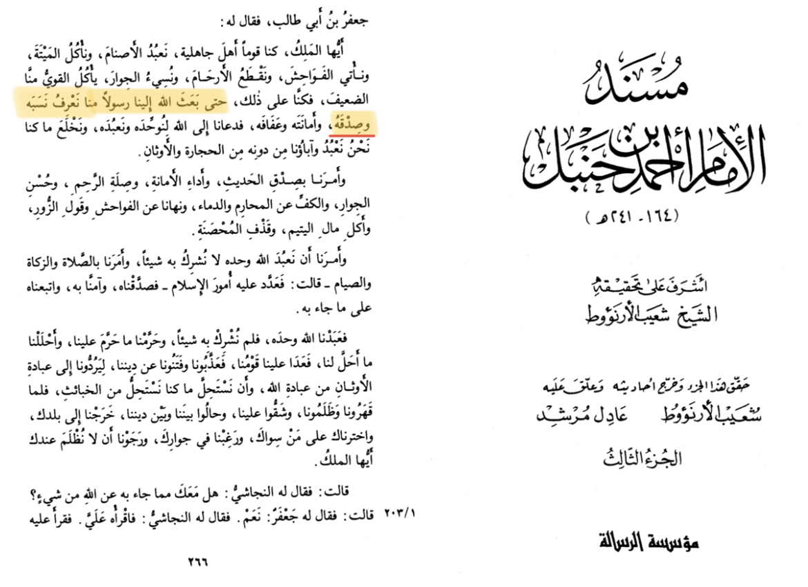
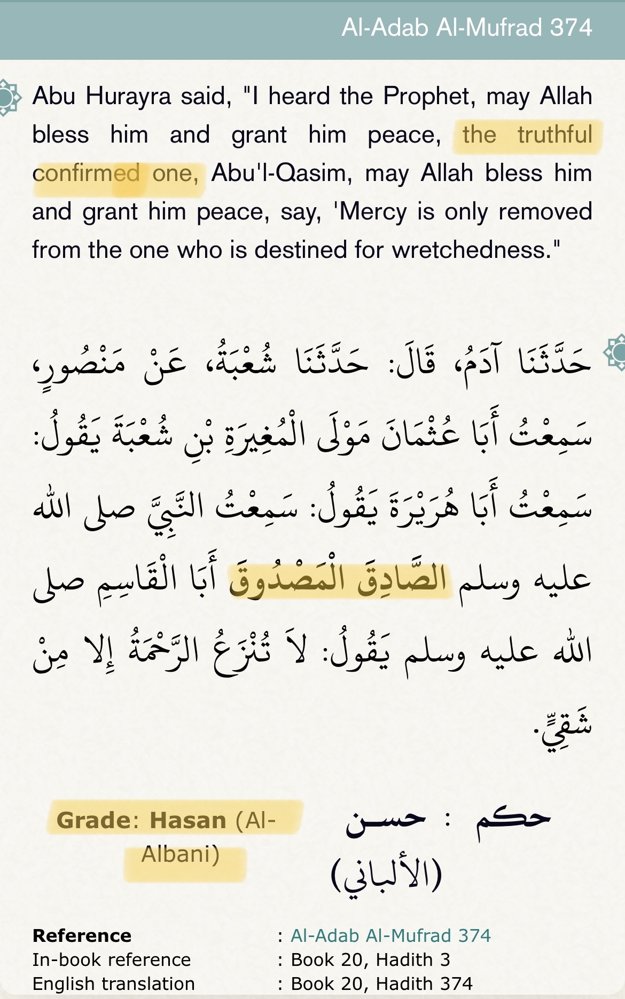
- Prophet Muhammed pbuh justice
In this narration a hypocrite came and told the prophet “do justice”
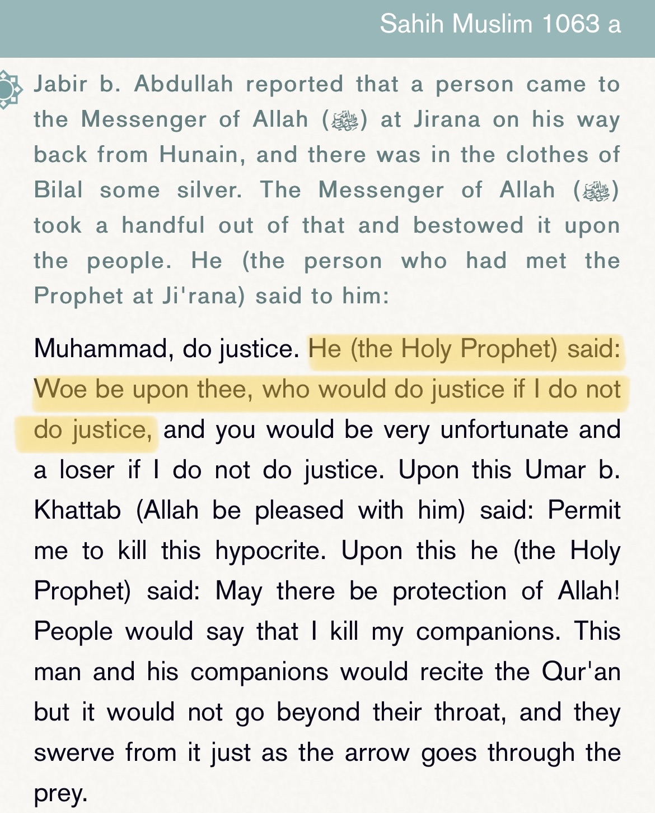
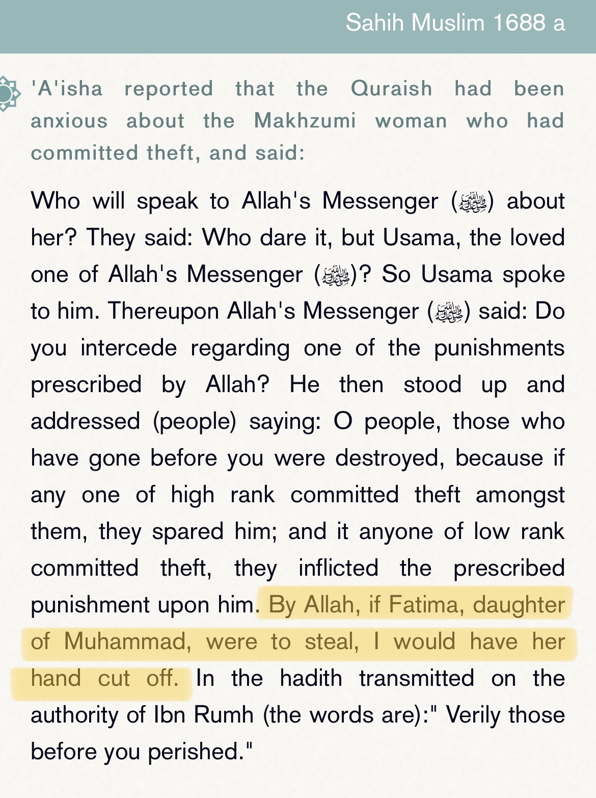
And we can find many other narrations where he pbuh orders others to do justice and verses
where Allah swt orders justice
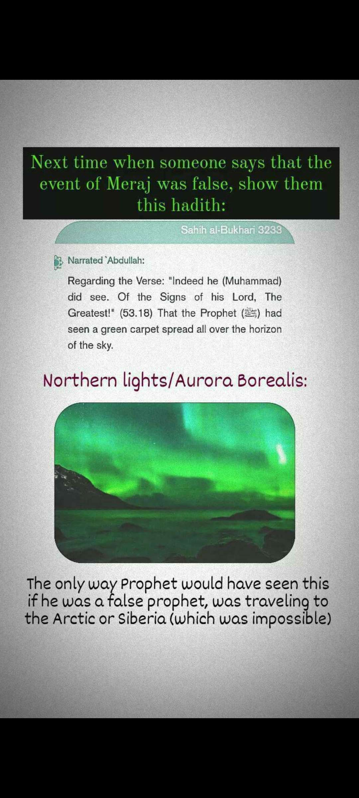
Surah Al-Haaqqa (The Reality)
69:44
if [the Prophet] had attributed some fabrication to Us,
69:45
We would certainly have seized his right hand
69:46
and cut off his lifeblood,
69:47
and none of you could have defended him.
69:48
This [Quran] is a reminder for those who are aware of God.
Translation: Abdul Haleem | Meccan
Surah Al-Israa (The Night Journey)
17:1
Glory to Him who made His servant travel by night from the sacred place of worship
to the furthest place of worship, whose surroundings We have blessed, to show him some of Our signs:
He alone is the All Hearing, the All Seeing.
Translation: Abdul Haleem | Meccan
Addressing Claims Against Isra’ and Miraj 👇
Claim 1
“The report in Syar a’alam al-nubala’ al-sirah al-nabawiyah volume 1 page number 198 is unreliable as the prophet gave vague, nonspecific details about an oncoming caravan, and any caravan having those features could have shown up! It’s not impressive.”
If one actually decided to pay more than a simple cursory glance at the report, they would immediately realise their mired parochialism - in no way are those details “vague” and “non specific”
Ataraxia — heute um 16:48 Uhr
To paraphrase, it is basic common sense that the more conditions added cumulatively onto the previous ones, the more restricted and particular your statement becomes.
Let us illustrate an example:
Consider the statement “it will rain”
Now of course, that’s very vague and non-particular. If i said, “it will rain today”, that restricts the statement much more.
If I then say “it will rain today at 3pm” - that further particularises it.
If I go on to say “it will rain today at 3 pm in New York” - once again, further accentuating the specificity and imposing more restrictions on our original statement.
Now, according to pervasive anti Islamic polemic, the statement of the Prophet that a very particular type of caravan will come is ‘vague’. Reading the report with more than just a jittering, frazzled peek:
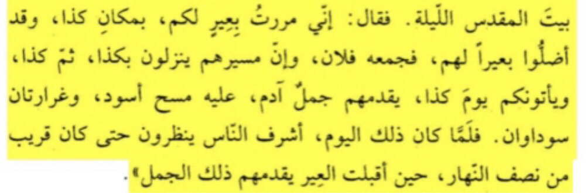
“..I passed upon a caravan coming for you, in this place, and they lost their camels, and then so and so recollected them, and their march is coming this way, and then they’ll change to that way, and they’ll come to you on this particular day and time, led by a white camel, on it is a black saddle, and two black sacks…”
This in no way is ‘vague’. There are many intricacies of this report that illuminate the stark impossibility of mere ‘guessing’.
But I no need elucidate further - I want you to go and ponder over how likely it is for one to say oh this organised caravan will lose their camels, and this man of a particular rank in the caravan would retrieve them.
Beyond this, I want you to look up the rarity of white camels, their value, and the plausibility of them partaking in vigorous trade labour, especially at the front of a caravan.
————————————————————
Claim 2
“If Jibreel’s wings are said to cover the entire horizon, how then did the prophet see a green carpet over the horizon? Plus green skies like that are not uncommon during tornados and storms in Arabia.”
The Prophet ﷺ says he saw Jibreel AS in his original form only twice. Jibreel AS had 600 wings, with pearls, rubies and diamonds dripping from each wing. He filled up the entire horizon and was seen sitting on the throne which Allah provided for him. The colors of his wings and the soles of his feet were green. (Ahmad in al-Musnad, and Ibn Katheer said in al-Bidayah that its isnad (chain of narrators) is jayyid (good))
The Messenger of Allah (sal Allahu alaihi wa sallam) saw Jibreel (alaihis salam) twice in the angelic form in which Allah (subhana wa ta’ala) has created him. These two occasions are mentioned in the above quoted Aayaat; once soon after revelation commenced, and the second time when he was taken up to the highest heaven during the Miraaj. Jibreel (alaihis salam) “had six hundred wings, each of which filled the horizon, and there were multi-coloured pearls and rubies falling from his wings.” [Musnad al-Imam Ahmad]
The Messenger of Allah (sal Allahu alaihi wa sallam) said: “That is Jibreel; I never saw him in the form in which Allah created him except on these two occasions. I saw him descending from the heavens, with his huge size filling the space between the heaven and the earth.” [Sahih Muslim]
It is also confirmed in Saheeh Muslim that ‘Aa’ishah narrated that the Prophet said: ''I did not see him – meaning Jibreel (Gabriel) – in the form that he was created in except twice.”
Thus the only times the Prophet saw Jibreel in the form possessing wings which would have covered the whole horizon, only viewable to the Prophet as the Quran and Sunnah clearly illuminate how normal human beings are unable to see angels in their true form, was when he was descending soon after the first revelation, and when he took Muhammad ﷺ to the highest heaven during Miraaj.
Thus, when the prophet was travelling via Buraq, Jibreel was not in his form which would have blocked the horizon, and so the prophet had indeed seen that ‘green carpet’ in the horizon of the sky.
————————————————————
Claim 3
“Green skies like that are not uncommon in arabia during tornados and sandstorms!”
This is a completely nonsensical claim
Firstly, when the anti Islamic polemicist cites these so called ‘green skies’ during tornados and whatnot,
The sky can barely be described as ‘green’
The whole visible local sky is pervaded by that colour, and NOT simply a carpet of green spread over the horizon
Explicating on 2, these so called ‘green’ skies in Arabia are starkly disparate to anything that can be described as a ‘carpet’ or ‘layer’; it’s more of a fog encapsulating you and your surroundings
contrary to that idea, what the prophet states is that he saw a CARPET OF GREEN IN THE SKY, and not that the sky WAS green
This clearly alludes to the idea that there was a layer of distinguishable green colour anomalous to the rest of the visible sky.
Furthermore, this claim is baseless as it is only feasible for the skies to look ‘green’ during a heavy sandstorm or tornado
Two things to note:
What reports do we have of their being a tornado or sandstorm that particular night of Israa? Not only that, do we have any reports of the audience responding to when the prophet said he saw a green carpet by saying that the skies appeared green local to them as well? Are there any reports of any of this? It’s on you to prove there was a sandstorm or tornado local to makkah that night.
Do you know how rare these types of sandstorms are in makkah? Not only that, for the sky to even appear ‘green’, there has to be further conditions that need to be sufficed
All in all, another frivolous contention.
————————————————————
Claim 4
“People saying the Prophet was trustworthy is not testament to the reliability of his story. People said good things about Hitler too! But we all know hitler was terrible!!”
This is one of the dumbest things I have ever encountered.
In fact, we can reverse it onto the anti Islamic polemicist. Even if people praise you like the dogs they are, even if people raise you up and say how cool and smart you are, even if people say how trustworthy you are, why should we believe anything you say? Why should any of those opinions be held to accentuate your reliability? We cannot assume you are reliable. After all, people said good things about Hitler too, and we know how bad hitler is 🥺.
And what’s even more curious is that those agreeing with this anti Islamic polemicist is his desperate begs and cult - whereas for Muhammad ﷺ, even his enemies confirmed his trustworthiness.
Did hitler’s worst enemies and haters declare how reliable he is?
Nevertheless, by your own flawed logic, you as the anti islamic interlocutor should not be held reliable, for the same reason hitler wasn’t, and similarly the same reason you say that the reliability of Muhammad ﷺ is dubious.
————————————————————
Claim 5
“The Isra’ and Miraj story was plagiarised from Zoroastrian doctrine.”
This is once again an emblem of the cope the anti Islamic polemicist needs to employ in order to defend his own hysteria.
This similar story is described in ‘Arda Viraf’ - and when was this codified / compiled? The 10th or 11th century. Now to allow for some benefit of the doubt, because of course the fool will argue that these stories were previously transmitted orally, well - historians establish that even so, the story most likely was originated in the 9th or 10th century
This is no doubt problematic for the argumentative fool.. because the quran was revealed in the early 7th century
So then… the fool should now attempt to cope some more.. but leave him to his own folly.
————————————————————
« 𝐀𝐛𝐮 𝐁𝐚𝐤𝐫 𝐬𝐚𝐢𝐝, "𝐈 𝐛𝐞𝐚𝐫 𝐰𝐢𝐭𝐧𝐞𝐬𝐬 𝐭𝐡𝐚𝐭 𝐲𝐨𝐮 𝐚𝐫𝐞 𝐭𝐡𝐞 𝐌𝐞𝐬𝐬𝐞𝐧𝐠𝐞𝐫 𝐨𝐟 𝐀𝐥𝐥𝐚𝐡." 𝐓𝐡𝐞𝐧 𝐭𝐡𝐞 𝐩𝐨𝐥𝐲𝐭𝐡𝐞𝐢𝐬𝐭𝐬 𝐬𝐚𝐢𝐝, "𝐋𝐨𝐨𝐤 𝐚𝐭 𝐭𝐡𝐞 𝐬𝐨𝐧 𝐨𝐟 𝐀𝐛𝐮 𝐊𝐚𝐛𝐬𝐡𝐚 𝐜𝐥𝐚𝐢𝐦𝐢𝐧𝐠 𝐭𝐡𝐚𝐭 𝐡𝐞 𝐯𝐢𝐬𝐢𝐭𝐞𝐝 𝐁𝐚𝐲𝐭 𝐚𝐥-𝐌𝐚𝐪𝐝𝐢𝐬 (𝐉𝐞𝐫𝐮𝐬𝐚𝐥𝐞𝐦) 𝐥𝐚𝐬𝐭 𝐧𝐢𝐠𝐡𝐭." 𝐓𝐡𝐞 𝐏𝐫𝐨𝐩𝐡𝐞𝐭 (ﷺ) 𝐬𝐚𝐢𝐝, "𝐎𝐧𝐞 𝐨𝐟 𝐭𝐡𝐞 𝐬𝐢𝐠𝐧𝐬 𝐨𝐟 𝐰𝐡𝐚𝐭 𝐈 𝐡𝐚𝐯𝐞 𝐭𝐨𝐥𝐝 𝐲𝐨𝐮 𝐢𝐬 𝐭𝐡𝐚𝐭 𝐈 𝐩𝐚𝐬𝐬𝐞𝐝 𝐛𝐲 𝐚 𝐜𝐚𝐫𝐚𝐯𝐚𝐧 𝐨𝐟 𝐲𝐨𝐮𝐫𝐬 𝐚𝐭 𝐚 𝐜𝐞𝐫𝐭𝐚𝐢𝐧 𝐩𝐥𝐚𝐜𝐞, 𝐚𝐧𝐝 𝐭𝐡𝐞𝐲 𝐡𝐚𝐝 𝐥𝐨𝐬𝐭 𝐚 𝐜𝐚𝐦𝐞𝐥. 𝐀 𝐦𝐚𝐧 𝐧𝐚𝐦𝐞𝐝 𝐬𝐨 𝐚𝐧𝐝 𝐬𝐨 𝐠𝐚𝐭𝐡𝐞𝐫𝐞𝐝 𝐢𝐭 𝐟𝐨𝐫 𝐭𝐡𝐞𝐦. 𝐓𝐡𝐞𝐢𝐫 𝐣𝐨𝐮𝐫𝐧𝐞𝐲 𝐰𝐢𝐥𝐥 𝐛𝐫𝐢𝐧𝐠 𝐭𝐡𝐞𝐦 𝐝𝐨𝐰𝐧 𝐚𝐭 𝐚 𝐜𝐞𝐫𝐭𝐚𝐢𝐧 𝐩𝐥𝐚𝐜𝐞, 𝐭𝐡𝐞𝐧 𝐚𝐭 𝐚𝐧𝐨𝐭𝐡𝐞𝐫 𝐩𝐥𝐚𝐜𝐞, 𝐚𝐧𝐝 𝐭𝐡𝐞𝐲 𝐰𝐢𝐥𝐥 𝐜𝐨𝐦𝐞 𝐭𝐨 𝐲𝐨𝐮 𝐨𝐧 𝐬𝐮𝐜𝐡 𝐚𝐧𝐝 𝐬𝐮𝐜𝐡 𝐚 𝐝𝐚𝐲. 𝐓𝐡𝐞𝐢𝐫 𝐥𝐞𝐚𝐝 𝐜𝐚𝐦𝐞𝐥 𝐰𝐢𝐥𝐥 𝐛𝐞 𝐖𝐡𝐢𝐭𝐞 𝐢𝐧 𝐜𝐨𝐥𝐨𝐫 𝐚𝐧𝐝 𝐰𝐢𝐥𝐥 𝐡𝐚𝐯𝐞 𝐭𝐰𝐨 𝐛𝐥𝐚𝐜𝐤 𝐡𝐮𝐦𝐩𝐬." 𝐖𝐡𝐞𝐧 𝐭𝐡𝐚𝐭 𝐝𝐚𝐲 𝐜𝐚𝐦𝐞, 𝐩𝐞𝐨𝐩𝐥𝐞 𝐞𝐚𝐠𝐞𝐫𝐥𝐲 𝐚𝐰𝐚𝐢𝐭𝐞𝐝 𝐮𝐧𝐭𝐢𝐥 𝐢𝐭 𝐰𝐚𝐬 𝐜𝐥𝐨𝐬𝐞 𝐭𝐨 𝐧𝐨𝐨𝐧, 𝐚𝐧𝐝 𝐭𝐡𝐞𝐧 𝐭𝐡𝐞 𝐜𝐚𝐫𝐚𝐯𝐚𝐧 𝐚𝐫𝐫𝐢𝐯𝐞𝐝 𝐰𝐢𝐭𝐡 𝐭𝐡𝐞 𝐯𝐞𝐫𝐲 𝐜𝐚𝐦𝐞𝐥 𝐭𝐡𝐚𝐭 𝐭𝐡𝐞 𝐌𝐞𝐬𝐬𝐞𝐧𝐠𝐞𝐫 𝐨𝐟 𝐀𝐥𝐥𝐚𝐡 (ﷺ) 𝐡𝐚𝐝 𝐝𝐞𝐬𝐜𝐫𝐢𝐛𝐞𝐝. 𝐓𝐡𝐢𝐬 𝐢𝐬 𝐚𝐧 𝐚𝐮𝐭𝐡𝐞𝐧𝐭𝐢𝐜 𝐜𝐡𝐚𝐢𝐧 𝐨𝐟 𝐧𝐚𝐫𝐫𝐚𝐭𝐢𝐨𝐧 (𝐬𝐚𝐧𝐚𝐝) [(𝟔)]. 𝐈𝐭 𝐡𝐚𝐬 𝐚𝐥𝐬𝐨 𝐛𝐞𝐞𝐧 𝐫𝐞𝐩𝐨𝐫𝐭𝐞𝐝 𝐬𝐞𝐩𝐚𝐫𝐚𝐭𝐞𝐥𝐲 𝐢𝐧 𝐨𝐭𝐡𝐞𝐫 𝐧𝐚𝐫𝐫𝐚𝐭𝐢𝐨𝐧𝐬, 𝐚𝐧𝐝 𝐰𝐢𝐭𝐡 𝐭𝐡𝐞 𝐩𝐞𝐫𝐦𝐢𝐬𝐬𝐢𝐨𝐧 𝐨𝐟 𝐀𝐥𝐥𝐚𝐡, 𝐰𝐞 𝐰𝐢𝐥𝐥 𝐦𝐞𝐧𝐭𝐢𝐨𝐧 𝐭𝐡𝐞𝐦 𝐢𝐟 𝐭𝐡𝐞𝐲 𝐚𝐫𝐞 𝐩𝐫𝐞𝐬𝐞𝐧𝐭. »
•📕 [Dala'il al-Nubuwwah | 2/357]
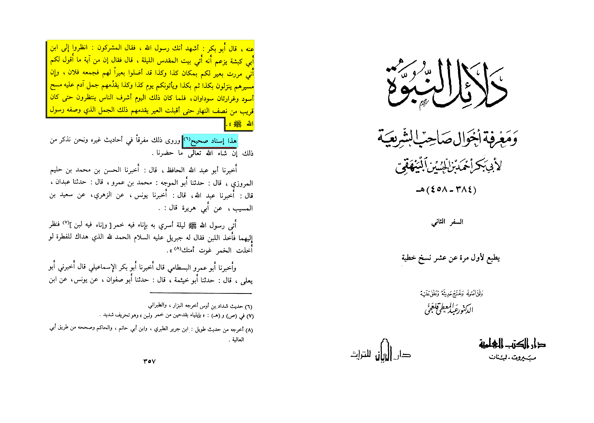